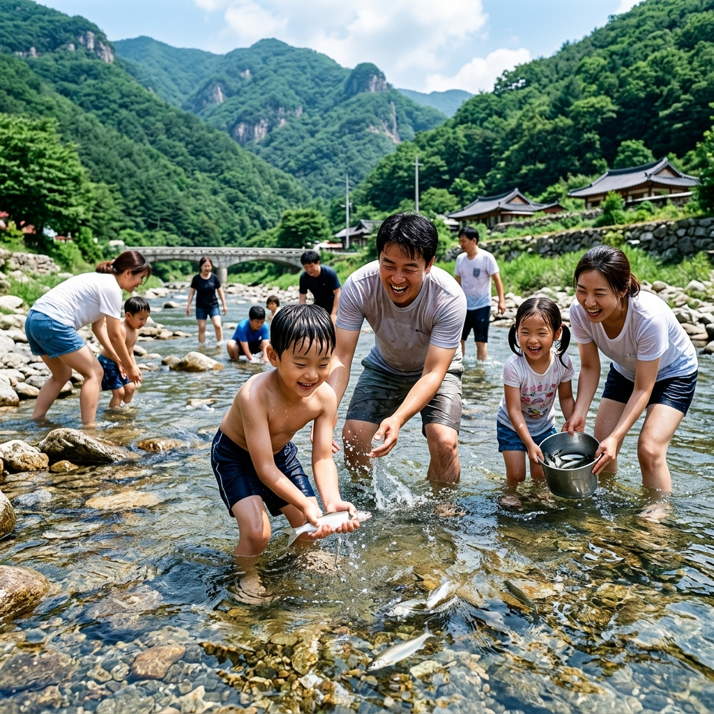
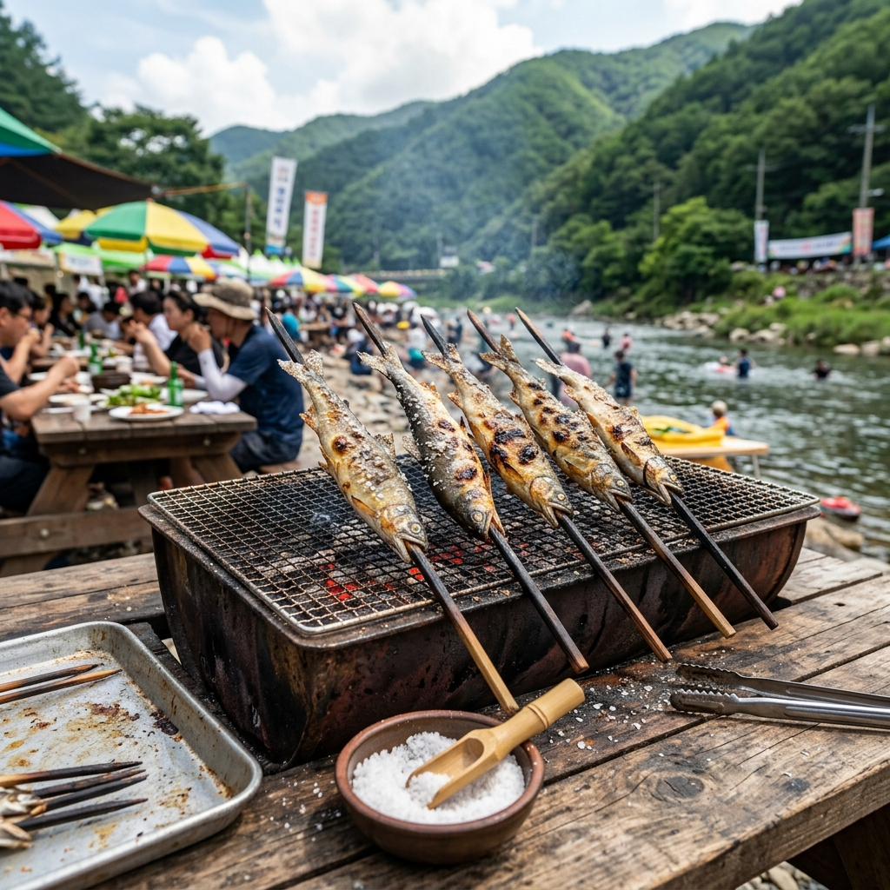
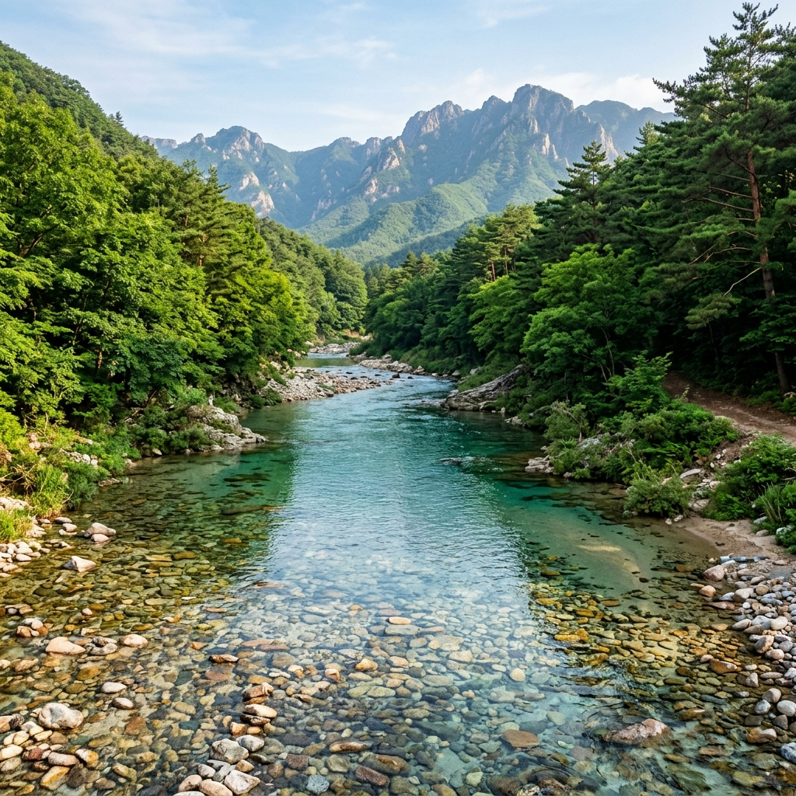

아이와 함께 여름 피서를 계획하다가 '맨손으로 물고기를 잡아 그 자리에서 구워 먹는다'는 말에 혹해서 봉화 은어축제를 찾게 됐습니다.
솔직히 처음에는 아이가 실제로 잡을 수 있을지 걱정됐습니다. 물고기가 발 아래를 요리조리 빠져나갈 때마다 아이는 깔깔대며 손을 허우적댔는데, 그 모습 자체가 여름의 가장 좋은 추억이 됐습니다.
은어를 잡은 뒤 바로 구워 먹는 맛은 정말 달랐습니다. 내성천 청정 계곡과 함께, 여름 피서지로서 봉화의 진짜 매력을 정리해 드립니다.
내성천은 낙동강의 지류로, 경북 봉화군 북부 산지에서 발원해 예천군을 거쳐 흘러갑니다.
이 강이 특별한 이유는 강바닥의 모래사장과 투명한 수질 때문입니다. 내성천은 모래가 강바닥을 두껍게 덮고 있는 '모래강'으로 분류되며, 강 위에서 내려다봤을 때 바닥이 훤히 보일 정도입니다.
은어는 수질이 2~3급 이하로 오염된 곳에서는 아예 살지 못하는 어종입니다. 봉화 내성천에 은어가 사는 것은 이 강이 그만큼 깨끗하다는 살아 있는 증거입니다.
제가 처음 내성천을 봤을 때 강물 속이 너무 잘 보여 깜짝 놀랐습니다. 강 한가운데서도 발밑 모래가 선명히 보이는 수질은 도심 하천과 전혀 다른 세계였습니다.

봉화 은어축제는 통상 7월 말~8월 중순 사이에 내성천 일원에서 열립니다.
2026년 구체적인 날짜는 봉화군청 공식 채널에서 발표 후 확인하시기 바랍니다. 행사는 주말을 중심으로 개최되며, 평일에도 일부 프로그램이 운영되는 경우가 있습니다.
주요 프로그램은 맨손 은어잡기, 은어 소금구이 체험, 내성천 물놀이, 전통 뗏목 타기, 강변 캠핑 등입니다.
저는 축제 첫날 오전 일찍 도착했는데, 이때가 가장 여유롭게 체험할 수 있었습니다. 주말 오후에는 인파가 몰려 체험 대기가 길어집니다.
처음 참여하는 분들의 가장 큰 실수는 너무 빠르게 달려드는 것입니다.
은어는 반응이 빠르고 몸이 매끄러워, 손이 근처에 닿는 순간 빠져나갑니다. 제가 처음 10분은 한 마리도 못 잡고 헛손질만 했습니다.
요령은 조용히 접근해 강바닥 돌이나 모래 쪽으로 천천히 몰아가는 것입니다. 물살이 약한 곳에 은어가 머물기 때문에, 그런 포인트를 먼저 찾는 것이 핵심입니다.
어린이는 혼자서 잡기 어려울 수 있으니, 어른이 뒤에서 몰아주고 아이가 앞에서 잡는 방식이 효과적입니다. 결국 아이 혼자서도 한두 마리는 잡아냈는데, 그 기쁨이 엄청났습니다.
은어는 여름 제철 민물고기로, 잘 씻어 소금을 뿌려 구우면 수박향과 비슷한 향긋한 향이 납니다.
현장 구이 부스에서 즉석으로 구워주는 방식이라, 신선도가 최고의 상태입니다. 내장까지 먹어도 쓴맛이 거의 없고 고소합니다.
마트에서 파는 냉동 은어구이와는 확실히 다른 맛입니다. 갓 잡아 구운 은어 특유의 부드럽고 담백한 식감은 현장에서만 경험할 수 있습니다.
은어 매운탕도 별미입니다. 된장과 고추를 넣어 끓인 탕 국물이 깊고 시원해, 더위에 지친 몸을 회복하는 데 제격입니다.

봉화는 수도권에서 접근성이 좋지 않습니다.
서울에서 차로 약 3시간, 대중교통으로는 3시간 30분 이상 걸립니다. 당일치기라면 이동 자체에 너무 많은 시간이 소요됩니다.
봉화 읍내 숙박 시설이 많지 않습니다. 성수기에는 일찍 소진되므로, 1박을 계획하는 분은 최소 2~3주 전 예약이 필요합니다.
은어잡기 체험 인원이 제한돼 있어, 늦게 도착하면 원하는 타임슬롯에 참여하지 못할 수 있습니다. 아침 일찍 도착하는 것이 전략입니다.
내성천 본류 외에도 봉화는 깨끗한 계곡이 여러 곳 있습니다.
백천계곡은 봉화군 석포면에 위치하며, 천연기념물 열목어가 사는 청정 계곡입니다. 에메랄드빛 소(沼)와 너럭바위가 이어지는 계곡 길은 아이와 함께 걷기에도 좋습니다.
청옥산 자연휴양림은 숲속 계곡 캠핑의 명소입니다. 단, 성수기 예약 경쟁이 매우 치열하므로 숲나들e(foresttrip.go.kr)에서 수시로 확인하세요.
국립백두대간수목원은 봉화 방문 시 꼭 들러야 할 명소입니다.
국내 최대 규모 산림 식물원으로, 아시아 최대 씨앗 보관 시설인 시드볼트와 백두산 호랑이 야외 방사장이 있습니다. 스카이워크에서 백두대간 산세를 내려다보는 경험은 장관입니다.
분천역 V-train(협곡열차)도 추천합니다. 낙동강 상류 협곡을 따라 달리는 관광 열차로, 창밖 비경이 수려합니다. 성수기에는 예매가 빠르게 마감되므로 코레일 앱에서 미리 예매하세요.

자동차로는 서울 기준 중앙고속도로 영주IC 경유 약 3시간이 소요됩니다.
대중교통은 서울 청량리역에서 봉화역까지 무궁화호로 약 3시간 30분 걸립니다. 봉화역에서 내성천 축제장까지는 택시로 이동하면 됩니다.
봉화군 내 시내버스는 배차 간격이 길어 렌터카나 자가용 이용을 권장합니다.
아쿠아슈즈는 반드시 챙기세요. 내성천 강바닥에는 미끄러운 돌이 많아 맨발이나 슬리퍼는 위험합니다.
어린이 구명조끼는 현장에서 빌릴 수 있지만, 아이 체형에 맞는 것을 직접 챙겨 오면 더 안전합니다.
모기퇴치제를 잊지 마세요. 저녁 강변은 모기가 많습니다. 특히 캠핑을 계획 중이라면 텐트와 모기 방지 용품을 챙기세요.
초등학생 자녀와 함께 가는 가족 여행이라면 강력 추천합니다.
물속에서 직접 물고기를 잡고, 바로 구워 먹는 경험은 아이들에게 자연과 먹거리가 연결되는 소중한 체험이 됩니다.
청정 자연 속에서 조용히 쉬고 싶은 분들에게도 봉화는 좋은 선택입니다. 대형 관광지처럼 붐비지 않아 여유롭게 자연을 즐길 수 있습니다.
반면 접근성을 중요시하거나 숙박·편의 시설이 풍부한 곳을 원하는 분들에게는 다소 불편할 수 있습니다.